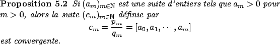
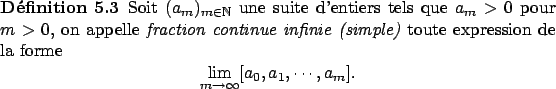
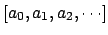
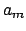
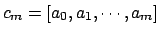
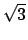
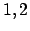
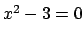
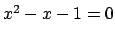

Jusqu'ici nous nous sommes contentés de donner l'écriture de nombres rationnels sous forme de fractions continues (simples) et nous avons constaté que cette écriture est finie, mais qu'en est-il des nombres irrationnels, est-il possible de leur donner une écriture sous forme de fraction continue ?
La réponse à cette question est encore positive, cependant cette écriture ne sera évidemment plus finie. Voici donc un premier problème, une fraction continue infinie a-t-elle un sens ? Pour résoudre ce problème, il est nécessaire d'avoir la proposition suivante.

Nous pouvons alors donner du sens à la notion de fraction continue infinie grâce à la définition suivante.

On écrit encore cette expression sous la forme . Comme dans le cas fini, les nombres  sont appelés les quotients partiels et les nombres  sont appelés les convergents de la fraction continue.
On peut alors prouver qu'il est possible d'écrire tout nombre irrationnel comme une fraction continue infinie. Tout se passe alors pour le mieux et on constate que les convergents ont exactement la signification attendue, à savoir qu'ils convergent vers la fraction continue infinie. Cependant, comment donner une écriture sous forme de fraction continue infinie à un nombre irrationnel ? La solution est encore donnée par l'algorithme d'Euclide, mais appliqué cette fois à des nombres non rationnels, la terminaison de l'algorithme n'est alors plus garantie.
Pour mieux visualiser cela essayons de donner l'écriture sous forme de fraction continue du nombre . Utilisons alors l'algorithme d'Euclide avec les nombres et .
Les lecteurs attentifs auront sans doute remarqué que le développement en fraction continue de présente un motif répétitif, une période, qui serait dans notre cas , pour attirer l'attention sur ce fait, on écrit la fraction continue par
Pour le nombre aussi, on détecte une période, avons-nous trouvé une écriture périodique des nombres irrationnels ? Malheureusement, ce n'est pas le cas, en fait il est possible de prouver que l'on peut donner une écriture semblable pour tout nombre irrationnel quadratique, c'est-à-dire tout nombre irrationnel solution d'une équation du second degré à coefficients entiers. Ce qui est le cas de qui est solution de l'équation  et qui est solution de .